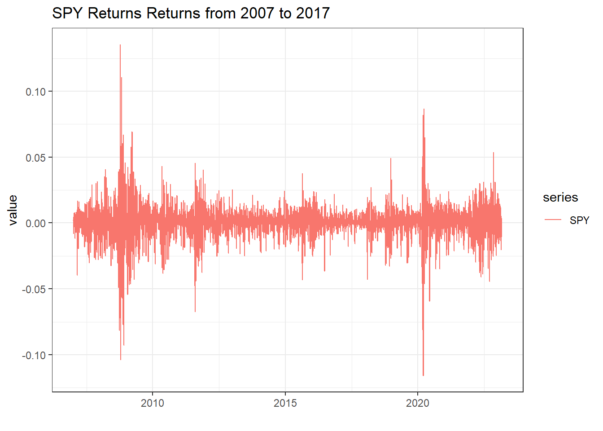
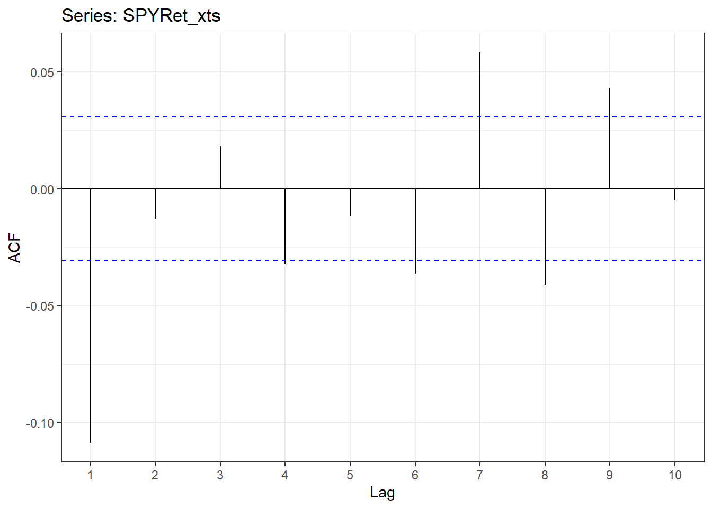
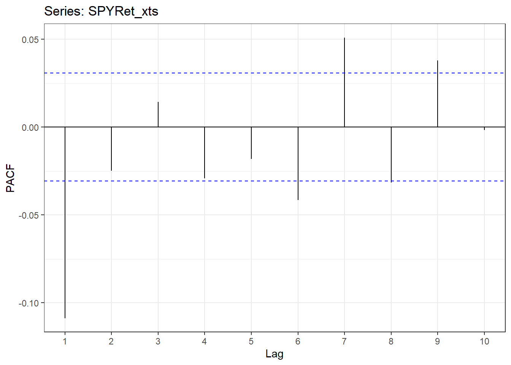
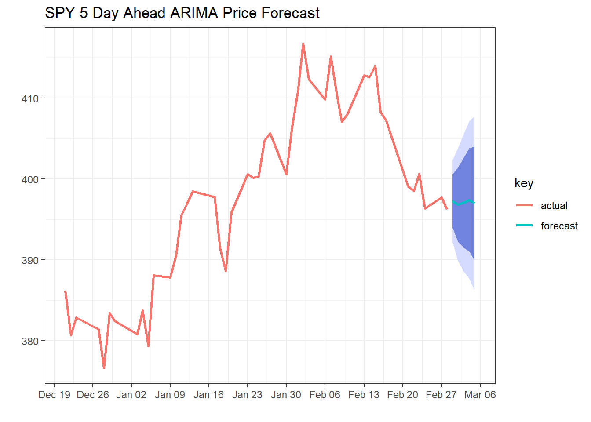

Basic Time-Series Analysis: Single Equation Models (ARIMA)
This post is the second in a series explaining Basic Time Series Analysis. Click the link to check out the first post which focused on stationarity versus non-stationarity, and to find a list of other topics covered. As a reminder, this post is intended to be a very applied example of how use certain tests and models in a time-sereis analysis, either to get someone started learning about time-series techniques or to provide a big-picture perspective to someone taking a formal time-series class where the stats are coming fast and furious. As in the first post, the code producing these examples is provided for those who want to follow along in R. If you aren’t into R, just ignore the code blocks and the intuition will follow.
In this post we cover the ARIMA model for a single time series. Single equation models like the ARIMA are generally used more in a forecasting context rather than in an economic analysis context wherein uncovering insights into, or relationships between, markets might be the goal. Single market models, which look at just one series of prices at a time, can only reveal so much economic insight. For determining relationships among many markets, models like the VAR and VECM are much more useful than the ARIMA; soon we’ll cover those models in a future post. However, even if you don’t care about forecasting and you only want to study market linkages, you will have an easier time understanding where the VAR and VECM models come from if you have been exposed to the ARIMA model first.
Make no mistake though, forecasting is a valid pursuit in its own right. Single equation models basically try to infer from historical patterns in the price or return series what the likely next realization will be, given recent history. Admittedly, these models do not give very precise predictions, but the confidence intervals they produce are informative as to what kind of range should be expected of future values.
For simplicity, we will continue as in the first post using SPY (the S&P 500 exchange traded fund) prices to illustrate.1
The code below pulls SPY prices from Yahoo Finance, converts them to percent returns, and plots it. In the first post we already determined that SPY has a unit root, so we already know we should generally be working with the data as percent returns.
# If you are following along in R, uncomment the next lines and run once to install the required packages
# install.packages('ggplot2')
# install.packages('xts')
# install.packages("stargazer")
# install.packages('quantmod')
# install.packages('broom')
# install.packages('tseries')
# install.packages("kableExtra")
# install.packages("kable")
# install.packages("knitr")
# install.packages("forecast")
# install.packages("sweep")
library(quantmod)
library(broom)
library(ggplot2)
getSymbols(c('SPY'))[1] "SPY"SPY <- SPY$SPY.Adjusted
SPYRet <- log(SPY) - log(lag(SPY))
SPYRet_xts <- SPYRet
colnames(SPYRet) <- c('SPY')
SPYRet <- tidy(SPYRet)
ggplot(SPYRet, aes(x = index, y = value, color = series)) +
geom_line() +
theme_bw() +
labs(title = "SPY Returns Returns from 2007 to 2017", x = "")
Now think about this series in the same context of trying to write down the probability distribution that generate the returns. In the first post of this series, we noted that a proper statistical model should express returns as coming from a single stationary probability distribution.
\[r^{SPY}_t \sim N(\mu, \sigma^2)\]
Also in the first post we argued that differencing a non-stationary series usually gets you pretty far toward this goal. This post will continue trying to improve on this objective. Note first that we have not quite achieved a series that follows a single probability distribution (iid is the stats jargon for this) simply by differencing. It is quite obvious that the volatility of this series changes over time. To correct for changing variance or volatility General Auto-regressive Conditional Heteroskedasticity (GARCH) models can be used.
Less obvious is that the mean of this series is or might be changing over time. From the plot, you might be able to detect short runs of positive or negative returns. Put another way, although the overall mean looks pretty constant at something near zero, if you focused on a short span of this data, it could have positive or negative returns. Put yet another way, returns could be correlated over time. To correct for a changing mean, or correlation over time in the returns, an ARIMA model can be used.
We’ll discuss the ARIMA model in detail below and the GARCH model in the next post, but remember this: We know returns are not iid (iid \(\rightarrow\) generated by a single probability distribution).
\[r^{SPY}_t \sim N(\mu_t, \sigma_t^2)\]
- ARIMA corrects for the changing mean \(\Rightarrow \mu_t \rightarrow \mu\)
- GARCH corrects for the changing variance \(\Rightarrow \sigma^2_t \rightarrow \sigma^2\)
The ARIMA model is easiest understood by breaking it down into it’s parts.
The I Part of ARIMA
Even though the I is in the middle it’s the easiest to explain because we’ve already talked a lot about it. The I stands for Integrated, as in Integrated of order zero, or I(0) (another way to say stationary), or integrated of order one, or I(1) (another way to say non-stationary or unit root). Putting the I in ARIMA simply means we are going to test for unit roots and use log differences if it is non-stationary and levels if it is stationary. We know we should be using log differences for SPY, so we are done with the I part of ARIMA.
Before we move on, let’s note some conventions for writing returns. I see returns often denoted according to this convention where time t SPY returns are expressed as
\[\Delta SPY_t = log(SPY_t) - log(SPY_{t-1}),\]
and lagged (time t-1) returns are expressed as
\[\Delta SPY_{t-1} = log(SPY_{t-1}) - log(SPY_{t-2}),\] etc.
People are often loose with whether \(\Delta SPY_t\) means logged differences (percent returns) or straight differences (without the logs). In price analysis I think it is almost always preferable to deal with percent changes, so you will mostly see logged differences. Also fairly common is notation like
\[r^{SPY}_t = log(SPY_t) - log(SPY_{t-1}),\]
to more explicitly state that logged differences are being used to create percent returns. This is the convention we’re using in the current post.
The AR Part of ARIMA
We said that the ARIMA model will ultimately help us eliminate the correlation across time of the returns. Usually if you are worried about this you will check to see if there actually is auto-correlation in your data before deciding on the ARIMA model. To check this, the auto-correlation function (ACF), and partial auto-correlation function (PACF) are used.
ACF(h)
The auto-correlation function of h, ACF(h), is the correlation between \(r^{SPY}_t\) and \(r^{SPY}_{t-h}\). So ACF(1) is \(Corr(r^{SPY}_t, r^{SPY}_{t-1})\), ACF(2) is \(Corr(r^{SPY}_t, r^{SPY}_{t-2})\), etc.
In R, the Acf() function from the forecast package computes these for as many lags (h’s) as you want and plots them. It’s a quick way to know if your data have auto-correlation problems to be fixed.
library(forecast)
ggAcf(SPYRet_xts, lag.max = 10) + theme_bw()
The horzontal blue lines on this chart are the significance lines. So the spikes above or below the blue lines indicate significant auto-correlation of current returns with that lag of returns. So it looks like there is indeed auto-correlation to account for in SPY returns. The lines for the first, second, and fifth lags spike above the blue lines.
PACF
The partial auto-correlation function tells you how much correlation there is between current returns and a lagged return after removing the correlation from all the previous lags. Its kind of like isolating which lags are really driving auto-correlation and which are just propagating the effects through the system.
There is a similar function in R to calculate the PACF() function.
ggPacf(SPYRet_xts, lag.max = 10) + theme_bw()
Since this function is more focused on isolating which lags are important it can be used to inform how many lagged returns should be included in a model to explain returns. In this case you would definitely include at least two, and possibly up to five lags. The fifth lag is a judgement call because at some level it is hard to believe returns from five days ago will be useful in predicting or explaining current returns. And, you give up degrees of freedom and power the more regressors you put in the model. Although in this particular case we have a lot of data in our series, it wouldn’t matter too much.
The AR(p) Model
An auto-regressive model of order p, AR(p) just means that we are going to try to explain SPY returns with p lags of of SPY returns. An AR(5) model for SPY returns looks like the following:
\[\begin{align} r^{SPY}_t &= \beta_0 + \beta_1r^{SPY}_{t-1} + \beta_2r^{SPY}_{t-2} + \beta_3r^{SPY}_{t-3} + \beta_4r^{SPY}_{t-4} + \beta_5r^{SPY}_{t-5} + \epsilon_t \\ \end{align}\]The following code generates lags of the returns to put on the right hand side of the regression equation, and the last line does the estimation.
SPYRet_1 <- lag(SPYRet_xts)
SPYRet_2 <- lag(SPYRet_1)
SPYRet_3 <- lag(SPYRet_2)
SPYRet_4 <- lag(SPYRet_3)
SPYRet_5 <- lag(SPYRet_4)
AR2 <- lm(SPYRet_xts ~ SPYRet_1 + SPYRet_2 + SPYRet_3 + SPYRet_4 + SPYRet_5)Estimated AR(5) Model of SPY Returns
library(kableExtra)
library(knitr)
library(tibble)
library(broom)
glance(AR2)%>%
kable("html") %>%
kable_styling(bootstrap_options = c("striped", "hover"))| r.squared | adj.r.squared | sigma | statistic | p.value | df | logLik | AIC | BIC | deviance | df.residual | nobs |
|---|---|---|---|---|---|---|---|---|---|---|---|
| 0.0137701 | 0.0125541 | 0.0128185 | 11.32351 | 0 | 5 | 11933.91 | -23853.83 | -23809.67 | 0.6662963 | 4055 | 4061 |
AR2coef <- tidy(AR2, stringsAsFactors = FALSE)
AR2coef <- cbind(AR2coef[, 1], round(AR2coef[, 2:5], digits = 2))
colnames(AR2coef) <- c('Variable', 'Beta Estimate', 'Std. Error', 't-statistic', 'P-Value')
AR2coef %>%
kable("html") %>%
kable_styling(bootstrap_options = c("striped", "hover"))| Variable | Beta Estimate | Std. Error | t-statistic | P-Value |
|---|---|---|---|---|
| (Intercept) | 0.00 | 0.00 | 1.93 | 0.05 |
| SPYRet_1 | -0.11 | 0.02 | -7.08 | 0.00 |
| SPYRet_2 | -0.02 | 0.02 | -1.50 | 0.13 |
| SPYRet_3 | 0.01 | 0.02 | 0.68 | 0.50 |
| SPYRet_4 | -0.03 | 0.02 | -1.97 | 0.05 |
| SPYRet_5 | -0.02 | 0.02 | -1.15 | 0.25 |
The coefficient estimate for the intercept term is zero to two decimal places and not significant. So on average, SPY returns are zero. This is in line with what we eyeballed from the figure of plotted returns. However, we do find that the first, second, and fifth lags of SPY returns are statistically significant, with P-Values less than 0.01 in this case. This is what we would have expected from the PACF. It is not a very economically significant result however. Notice that the R^2 is super small, meaning that we are not explaining much of the variation, and we didn’t get much forecasting power out of the model.
If we put confidence intervals around the forecast, it will definitely include zero return, which means if we were trying to use this forecast to inform trading decisions, we wouldn’t even know whether to buy or sell.
But I digress…
The MA part of ARIMA
The moving average model says maybe instead of modeling returns with lagged returns, we should model them with lagged errors. A MA(5) model would look like the following:
\[r^{SPY}_t = \beta_0 + \beta_1 \epsilon_{t-1} + \beta_2 \epsilon_{t-2} + \beta_3 \epsilon_{t-3} + \beta_4 \epsilon_{t-4} + \beta_5 \epsilon_{t-5} + \epsilon_t\]
So we just include fitted residuals from five previous time periods as explanatory variables for current returns.
Estimated MA(5) Model of SPY Returns
library(sweep)
# Easiest way to fit an MA model in R is with the Arima function from the forecast package. I'll explain when I put it all together at the end.
MA <- Arima(SPYRet_xts, order = c(0, 0, 5))
glance(MA)%>%
kable("html") %>%
kable_styling(bootstrap_options = c("striped", "hover"))| sigma | logLik | AIC | BIC | nobs |
|---|---|---|---|---|
| 0.0128093 | 11951.54 | -23889.08 | -23844.91 | 4066 |
MAcoef <- tidy(MA)
tstat <- MAcoef[, 2]/MAcoef[ , 3]
df <- length(SPYRet_xts) - 3
pvalue <- abs(tstat$estimate) %>% dt(df)
MAcoef <- cbind(MAcoef[2:3], tstat, pvalue) %>% round(digits = 2) %>% cbind(MAcoef[,1])
MAcoef <- MAcoef[, c(5, 1, 2, 3, 4)]
colnames(MAcoef) <- c('Variable', 'Beta Estimate', 'Std. Error', 't-statistic', 'P-Value')
MAcoef %>%
kable("html") %>%
kable_styling(bootstrap_options = c("striped", "hover"))| Variable | Beta Estimate | Std. Error | t-statistic | P-Value |
|---|---|---|---|---|
| ma1 | -0.11 | 0.02 | -7.14 | 0.00 |
| ma2 | -0.01 | 0.02 | -0.76 | 0.30 |
| ma3 | 0.02 | 0.02 | 1.13 | 0.21 |
| ma4 | -0.04 | 0.02 | -2.28 | 0.03 |
| ma5 | -0.01 | 0.02 | -0.81 | 0.29 |
| intercept | 0.00 | 0.00 | 1.94 | 0.06 |
In this model as well, we find that the first, second, and fifth lags of the residuals are significant in the regression model.
Next, lets put the AR and MA together.
The ARIMA Model
Now that we know what an AR(p) model is, what an MA(q) model is, and what the I stands for, we can easily talk about what an ARIMA(p, d, q) model is. First, the d is just how many times you difference the data. Typically this will be d = 0 for stationary series and d = 1 for non-stationary series. Then for example an ARIMA(2, 1, 3) model would look like the following:
\[r^{SPY}_t = \beta_0 + \beta_1r^{SPY}_{t-1} + \beta_2r^{SPY}_{t-2} + \beta_3 \epsilon_{t-1} + \epsilon_t \]
with two lags of returns in the AR part and three lags of residuals in the MA part. The fact that we are using returns means we set d = 1.
Estimated ARIMA(2, 1, 1) Model of SPY Prices
library(sweep)
# So earlier when we fitted the MA(5) model we were using the ARIMA function, but forcing the AR terms to have zero lags.
# We set d = 0 here becuase we already created returns, thus already differenced. If we put price levels into this function, you would want to sed d = 1.
ARIMA <- Arima(SPYRet_xts, order = c(2, 0, 1))
glance(ARIMA)%>%
kable("html") %>%
kable_styling(bootstrap_options = c("striped", "hover"))| sigma | logLik | AIC | BIC | nobs |
|---|---|---|---|---|
| 0.0128174 | 11947.96 | -23885.91 | -23854.36 | 4066 |
ARIMAcoef <- tidy(ARIMA)
tstat <- ARIMAcoef[, 2]/ARIMAcoef[ , 3]
df <- length(SPYRet_xts) - 3
pvalue <- abs(tstat$estimate) %>% dt(df)
ARIMAcoef <- cbind(ARIMAcoef[2:3], tstat, pvalue) %>% round(digits = 2) %>% cbind(ARIMAcoef[,1])
ARIMAcoef <- ARIMAcoef[, c(5, 1, 2, 3, 4)]
colnames(ARIMAcoef) <- c('Variable', 'Beta Estimate', 'Std. Error', 't-statistic', 'P-Value')
ARIMAcoef %>%
kable("html") %>%
kable_styling(bootstrap_options = c("striped", "hover"))| Variable | Beta Estimate | Std. Error | t-statistic | P-Value |
|---|---|---|---|---|
| ar1 | -0.06 | NaN | NaN | NaN |
| ar2 | -0.02 | NaN | NaN | NaN |
| ma1 | -0.06 | NaN | NaN | NaN |
| intercept | 0.00 | 0 | 1.86 | 0.07 |
It looks like we didn’t gain a lot by moving from the AR(5) or MA(5) to the ARIMA model. In our estimated ARIMA model only the second lag of the AR part is significant. Oh, well!
Forecasting Fun
Since I mentioned that these models are used primarily in a forecasting context, I’ll give a short example of what that might look like in R using the forecast, sweep, and ggplot2 packages.
# Using the auto.arima function from the forecast package will automatically select a good choices for p, d, q based on the data. Because I wanted to make the plot in levels, I gave the auto.arima function the prices in levels. Remember, it will check for the proper d as part of the routine.
h <- 5
fittedarima <- auto.arima(SPY)
arima_forecast <- forecast(fittedarima, h)
arima_sweep <- sw_sweep(arima_forecast)
dates <- c(index(SPY), index(SPY)[length(SPY)] + 1, index(SPY)[length(SPY)] + 2, index(SPY)[length(SPY)] + 3, index(SPY)[length(SPY)] + 4, index(SPY)[length(SPY)] + 5)
arima_sweep <- add_column(arima_sweep, dates)
# Plotting only the passed 50 days of prices.
arima_sweep_display<- arima_sweep[(dim(arima_sweep)[1]-50):dim(arima_sweep)[1], ]
# Visualizing the forecast
arima_sweep_display %>%
ggplot(aes(x = dates, y = value, color = key)) +
# Prediction intervals
geom_ribbon(aes(ymin = lo.95, ymax = hi.95),
fill = "#D5DBFF", color = NA, size = 0) +
geom_ribbon(aes(ymin = lo.80, ymax = hi.80, fill = key),
fill = "#596DD5", color = NA, size = 0, alpha = 0.8) +
# Actual & Forecast
geom_line(size = 1) +
#geom_point(size = 2) +
# Aesthetics
theme_bw() +
scale_x_date(date_breaks = "1 week", date_labels = "%b %d") +
labs(title = "SPY 5 Day Ahead ARIMA Price Forecast", x = "", y = "") 
That’s It!
Now you know what AR(p), MA(q), and ARIMA(p, d, q) models are used for. We didn’t remove all the auto-correlation. Maybe if we add GARCH effects in the error term? We will cover that in the the next post in the Basic Time-Series Analysis series.
Footnotes
If you are wondering why an ag economist like me isn’t using commodity prices for my examples, it’s because I want to use prices that can be ‘pulled’ from a data vendor like Yahoo Finance quickly and for free (so spot prices are out), and I don’t yet want to introduce the complication of how to create a series of ‘nearby’ futures contract prices.↩︎